오늘 우리는 Amazon Bedrock과 Google Cloud를 위한 Claude apps gateway를 소개합니다. 그동안 이 플랫폼들에서 Claude Code를 운영하려면 개발자마다 클라우드 자격 증명(credential)을 따로 발급하고, 모든 노트북에 설정을 일일이 수동으로 밀어 넣고, 개발자별 지출을 확인하기 위해 별도의 도구를 세워야 했습니다. 이 gateway는 자체 호스팅(self-hosted)되는 컨트롤 플레인(control plane)으로, Claude Code에 기업용 SSO 로그인, 중앙에서 강제되는 정책(policy), 역할 기반 접근 제어(role-based access), 그리고 사용자별 비용 귀속(per-user cost attribution)을 제공합니다.
gateway는 Linux에 배포되고 PostgreSQL 데이터베이스를 백엔드로 두는, 상태를 갖지 않는(stateless) 단일 컨테이너로 실행됩니다. gateway는 여러분의 업스트림(upstream) 자격 증명을 보관하고, 개발자를 여러분의 아이덴티티 공급자(identity provider)에 대해 인증하며, 관리형 설정(managed settings)을 배포하고 강제하며, 사용자별 사용량을 여러분이 운영하는 수집기(collector)로 보고합니다. 개발자를 온보딩하는 일은 그들을 여러분의 아이덴티티 공급자(IdP)에 추가하는 것을 의미합니다. 오프보딩은 그들을 제거하는 것을 의미합니다.
gateway는 Anthropic이 만들어 배포하며, 여러분의 개발자가 이미 설치하는 바로 그 claude 바이너리 안에 들어 있습니다. 따라서 여러분은 자신의 인프라에서 상태 없는 컨테이너 하나로 이를 실행할 수 있습니다. gateway와 클라이언트가 함께 빌드되기 때문에, /login 흐름은 gateway를 인식하고, 클라이언트는 로그인 시점에 관리형 설정을 자동으로 적용하며, 정책은 모든 요청에 대해 일관되게 강제됩니다.
gateway는 다음을 처리합니다.
gateway는, 여러분이 Claude API를 사용하도록 구성하지 않는 한, 추론 트래픽이나 사용량 데이터를 Anthropic에 보내지 않습니다. 또한 우리는 gateway가 사용하는 프로토콜을 공개하고 있어, 다른 gateway 개발자들도 동일한 기능을 구현할 수 있습니다.
gateway는 지금 바로 사용할 수 있습니다. 시작하려면 다음과 같이 하세요.
gateway.yaml이 여러분의 OIDC 발급자(issuer)와 업스트림 자격 증명을 가리키도록 설정한 뒤, 여러분의 IdP에 OIDC 앱 하나를 등록합니다.managed-settings.json에서 forceLoginMethod와 forceLoginGatewayUrl 파라미터를 설정합니다. 클라이언트는 최초 부팅 시 여러분의 gateway에 연결됩니다.더 알아보려면 문서를 참고하세요.